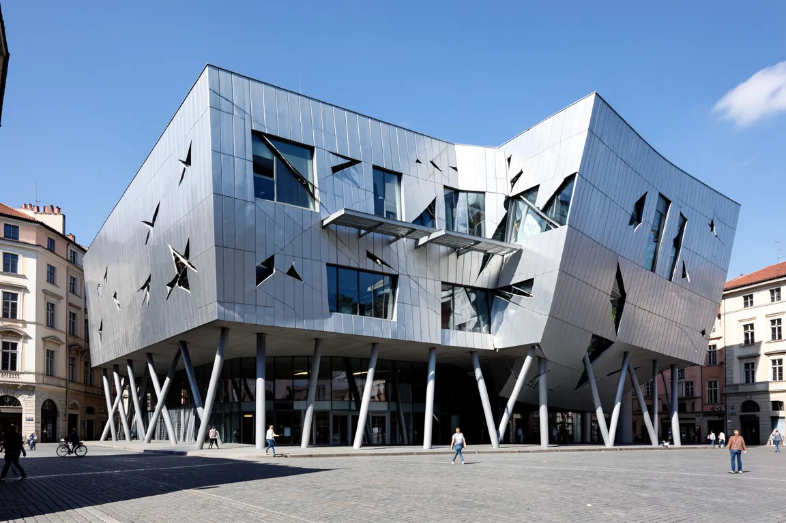

Skjeve, oppsplittede volumer som kolliderer i skarpe vinkler, med en fasade som ser ut til å rive seg selv i stykker. Gehry, Hadid, Libeskind og Coop Himmelb(l)au brukte forvrengning for å forstyrre den moderne bevegelsens rene boks innenfra.

Kjerneidé
Den rene formen er allerede mangelfull: forvreng rutenettet, la volumene kollidere og la bygget vise at orden er ustabil.
Designprinsipper
La to eller flere ortogonale volumer kollidere i skjevheter på 10 til 40°, slik at ingen vegg er parallell med naboen.
Splitt formen i 5 til 15 skår eller staver som overlapper, vipper og krager ut.
Vipp vegger og gulv 3 til 15° ut av loddlinjen, og la bjelker og søyler skråstille.
Skjær spaltevinduer og skarpe sprekker i vinkler som ikke følger etasjenivåene.
Vis påkjenningen: avstivning, foldede flater og konstruksjon som ser ut til å bære lasten uten en klar bane.
Kle skårene i ett materiale, vanligvis metallplate, sink eller titan, og la skjøtene tegne geometrien.
Antimønstre
Regelmessige ortogonale rutenett og gjentatte fag
Symmetriske komposisjoner rundt en akse
Myke avrundede klattformer uten harde kanter
Historisk sitat eller påsatt ornament
En enkel boks med én dekorativ skrå vegg
Vinduer på linje med etasjenivåene og en klar horisontal orden